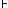

HOME TOP UP PREV NEXT 1 2 GERMAN MAP Tractatus Logico-Philosophicus 4.44
Something analogous holds of course for all signs, which express the same as the schemata of "T" and "F".
| p | q | |
| T | T | T |
| F | T | T |
| T | F | |
| F | F | F |
(Frege's assertion sign "" is logically altogether meaningless; in Frege (and Russell) it only shows that these authors hold as true the propositions marked in this way.
"" belongs therefore to the propositions no more than does the number of the proposition. A proposition cannot possible assert of itself that it is true.)
If the sequence of the truth-possibilities in the scheme is once for all determined by a rule of combination, then the last column is by itself an expression of the truth-conditions. If we write this column as a row the propositional sign becomes: "(T T - T)(p, q)", or more plainly: "(T T F T)(p, q)".
The number of places in the left-hand bracket is determined by the number of terms in the right-hand bracket.)